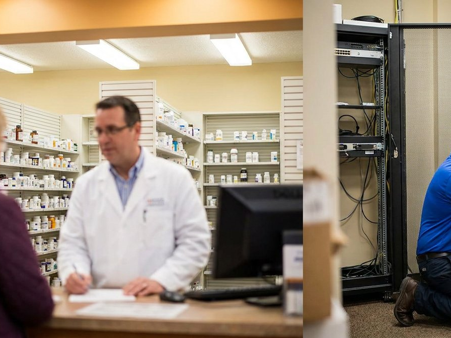

Retail businesses rely on point-of-sale (POS) systems, inventory applications, networks and secure access to customer information to serve shoppers and keep daily operations moving. Managed IT services help maintain these connected technologies and reduce avoidable disruptions.
DTCloudOn provides retail IT support, network engineering, cybersecurity and cloud services for storefronts and distributed retail teams. We support businesses throughout Texas, including Houston and surrounding communities, with technology planning tailored to their operations.
Get specialized retail IT support →Reliable store technology supports checkout, inventory visibility, employee productivity and customer service. DTCloudOn helps retailers plan and maintain their IT environments with practical security and support services.

Retail businesses handle customer information, account credentials and payment-related systems that require appropriate safeguards. Cybersecurity controls help reduce exposure to phishing, ransomware, unauthorized access and operational disruption.
DTCloudOn helps implement and manage firewalls, endpoint protection, access controls, software updates and monitoring. For environments that process payment card data, technical safeguards can also support the retailer’s applicable PCI DSS responsibilities, without replacing its compliance assessment.
Strengthen your retail security →Retail technology needs change as stores add locations, expand online sales and adopt new inventory or reporting tools. DTCloudOn helps evaluate cloud platforms, network capacity, device requirements and access controls so technology decisions align with business workflows.
Our approach includes practical IT planning, secure collaboration and support for business applications. We can help configure Microsoft 365, strengthen email security and establish backup and recovery practices suited to the data and applications your retail team relies on.
Explore cloud-based retail solutions →Retailers often need coordinated access to sales, inventory and communication systems across stores and online channels. DTCloudOn supports the networks, employee devices, cloud platforms and security controls that help these systems operate reliably.
For multi-location and e-commerce operations, we can help plan secure connectivity, user access management, system updates and backup procedures. Payment processing security depends on the payment platform and configuration, so we work with the appropriate vendors and your team on their respective responsibilities.
See our managed services →Talk to DTCloudOn about secure store networks, managed IT support, cloud services and cybersecurity for your retail operations.
Contact Us →Retail IT services include support for point-of-sale connectivity, inventory applications, user devices, business networks, cybersecurity and cloud services. They help stores and online teams manage technology more reliably as business needs change.
Monitoring, preventive maintenance, updates and troubleshooting can identify and address technical issues before some become major outages. No service eliminates all downtime, but a support plan can improve recovery and continuity for retail operations.
Retail environments may process customer information and payment transactions, attracting phishing, credential theft and ransomware attempts. Firewalls, endpoint protection, access controls, updates and monitoring can reduce cybersecurity risk. Payment card environments may also require PCI DSS controls.
Yes. IT providers can support secure connectivity, devices, cloud applications and system integrations used by stores and online teams. Specific payment and inventory integrations depend on the platforms and vendors involved.
Cloud services can centralize approved applications and reporting, support controlled employee access and make collaboration across locations easier. Successful deployment also depends on security configuration, connectivity and user training.
A scalable IT plan makes it easier to add locations, staff and supported business applications. Standardized networks, device management and access policies can reduce the effort involved in expansion.
IT services can help retail teams deploy, secure and maintain reporting tools for sales, inventory and operational data. The insights available depend on the source systems, data quality and analytics tools used.
Managed IT services handle agreed technology maintenance, security tasks and user support, allowing retail staff to spend more time serving customers and managing daily store operations.
Discuss point-of-sale connectivity, retail cybersecurity, secure cloud services and technology planning for your stores and online operations.
Request a Free Consultation →